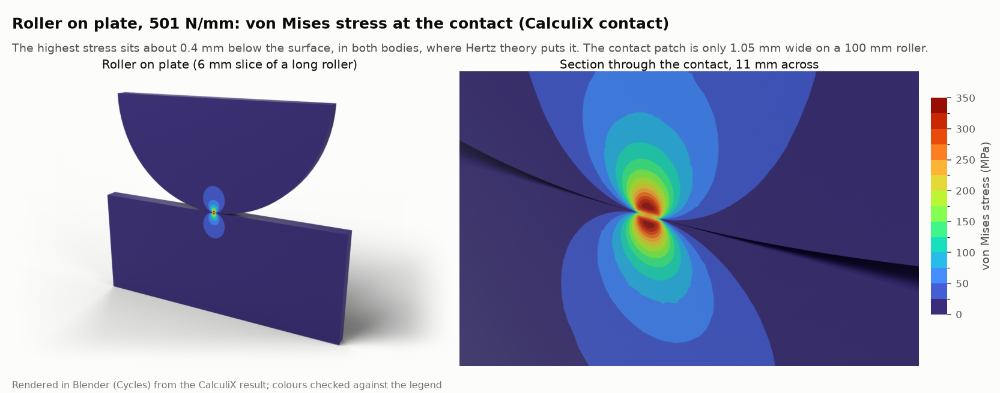
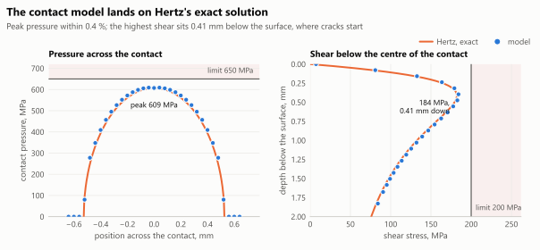
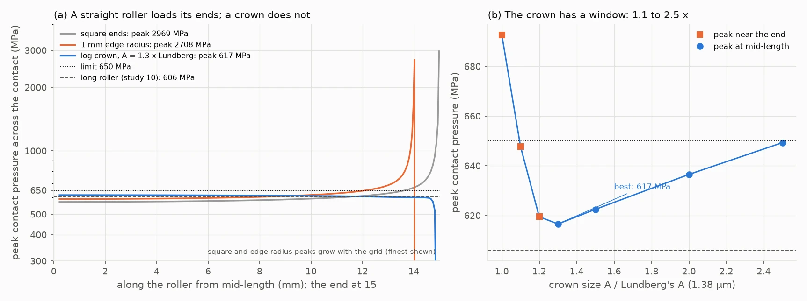
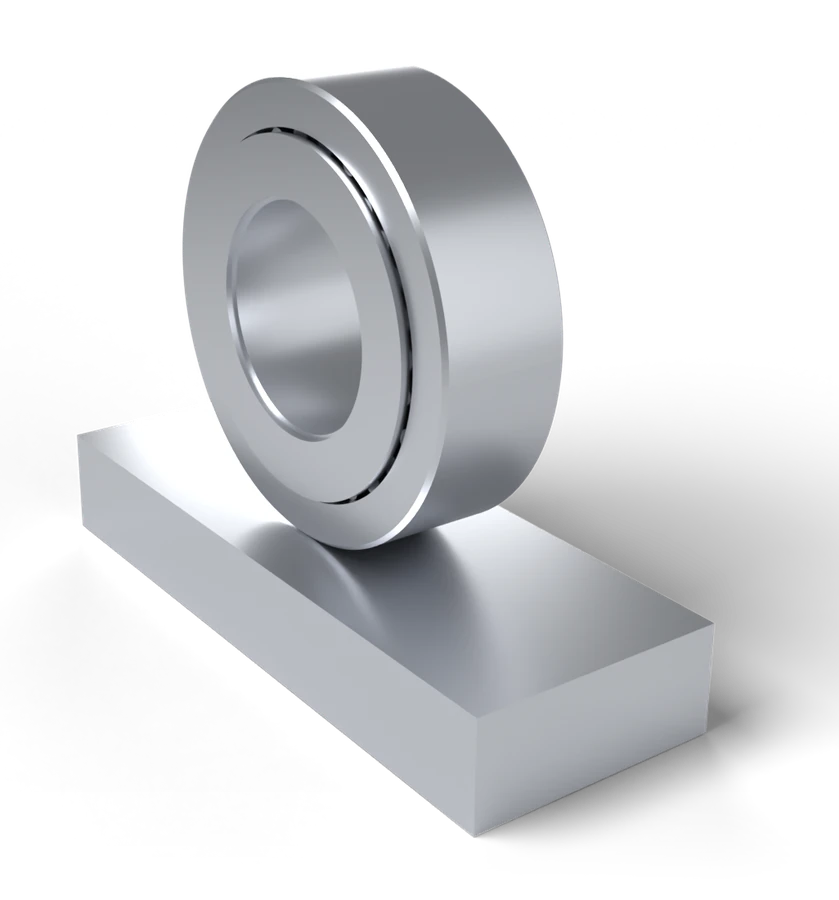

The Question
A hardened steel track roller, 100 mm in diameter, runs on a steel plate and carries 500 N for every millimetre of its width. Does the peak contact pressure stay at or under 650 MPa? And does the maximum shear stress below the surface, where rolling-contact fatigue cracks start, stay at or under 200 MPa?
The Answer
Yes on both. The peak contact pressure is 609 MPa and the maximum shear below the surface is 184 MPa, about 0.4 mm down. That leaves 6 % and 8 % of margin. The contact patch is 1.05 mm wide.
That's for a long roller. A real one needs a crown. Part 2 modelled a 30 mm roller along its length. Straight, it loads its ends at over 2,000 MPa and fails. With a logarithmic crown, about 3.7 µm of drop 1 mm from each end, the half-space model brings the peak back to 617 MPa at mid-length, a pass. A first 3D finite-element check reads about 5 % higher, too close to the 5 % margin to call, so the crown is my recommendation subject to a 3D mesh study.
The Model
- Parts
- A roller of 50 mm radius on a flat block, modelled as two separate bodies that can only touch. Half of each is modelled, about the vertical centre line.
- Material
- Steel in both, linear elastic: Young's modulus 210 GPa, Poisson's ratio 0.3.
- Loading
- The roller is pushed down by 0.015 mm, and the force it takes is read from the reactions: 501.1 N per mm of width.
- Contact
- Frictionless surface-to-surface contact in CalculiX. The surfaces may overlap by a tiny, checked amount (penalty contact).
- Mesh
- Hexahedral elements of 0.08, 0.04 and 0.02 mm in a 1.6 mm zone around the contact, growing to 4 mm far away.
- Analysis
- Nonlinear static, plane strain (a long roller, so nothing moves along its axis), in CalculiX 2.22.
- What's measured
- The contact half-width, the peak contact pressure, and the largest shear stress below the surface and its depth.
The case file: recorded assumptions, limits and inputs
This is the study's own record, written before the run and saved with it, in the shorthand of the case file.
cases/contact_roller_mesh.toml ↗
Steel roller (R = 50 mm) pressed onto a steel plate in plane strain with CalculiX surface-to-surface penalty contact; contact element size swept 0.08 / 0.04 / 0.02 mm and verified against Hertz line contact.
Assumptions, and How Each Is Checked
- Plane strain (long roller): one-layer hex slab with uz = 0 at every node.
- Frictionless contact; linear elastic, isotropic steel in both bodies.
- Half model about the vertical symmetry plane; the roller is a quarter disc loaded through its flat top face (far from the contact, a/R = 0.01).
- Penalty contact stiffness 50 E / element size; penetration is checked against the approach.
- Hertz assumes half-spaces; the block (60 x 50 mm half) and roller are about 100 contact widths across.
Limits
- Synthetic geometry, load and allowables; not calibrated to a product.
- No friction, surface roughness, residual stress or plasticity; rolling-contact fatigue life is not assessed.
- Checks establish numerical verification against Hertz only; no test data.
Inputs
| Input | Value |
|---|---|
| roller_radius_mm | 50 |
| block_half_width_mm | 60 |
| block_depth_mm | 50 |
| slab_thickness_mm | 0.5 |
| approach_mm | 0.015 |
| youngs_modulus_MPa | 210000 |
| poisson_ratio | 0.3 |
| yield_strength_MPa | 1200 |
| contact_element_size_mm | 0.04 |
| far_element_size_mm | 4 |
| penalty_stiffness_factor | 50 |
| refined_zone_mm | 1.6 |
Why It Matters
When a curved part presses on a flat one, they touch over a strip far narrower than either part: here about 1 mm on a 100 mm roller. All of the load passes through that strip, so the local stresses are several times anything else in the part. The highest shear stress isn't at the surface. It sits a fraction of a millimetre below it, which is why rolling-contact fatigue starts as cracks under the surface that later break out as pits.
Contact is also where finite-element models stop being linear. The solver doesn't know in advance where the parts touch, so it has to find the contact area as part of the solution. That makes it a good test of whether a nonlinear model can be trusted.
How It Works
I push the roller down a set distance and read the force from the reactions, which is more reliable than applying a force before the parts are touching. CalculiX works out where the two surfaces are in contact as it solves.
The reference is Hertz's solution from 1882, which gives the exact contact width, pressure distribution and stresses underneath for two elastic cylinders. Because the load isn't an input here, the comparison is made at the load the model actually carried.


How I Checked It
- Against Hertz. At 501.1 N/mm, the contact half-width matches to 0.005 %, the peak pressure to 0.4 %, and the depth of maximum shear to within 2 % of one element.
- Equilibrium. The force on the roller and the reaction under the plate balance exactly. The pressure added up across the patch accounts for the load within 2.2 %.
- The contact itself. The surfaces overlap by less than a ten-thousandth of how far the roller was pushed, so the penalty method isn't softening the answer.
- Mesh refinement. The two coarser meshes fail some of the Hertz checks, as you'd expect, so the answer comes from the finest one. Mesh uncertainty is 1.2 % on the pressure and 0.15 % on the shear.
What I Caught Along the Way
- The right model, read from the wrong output. My first try read the pressure from the element stresses at the surface. That came out 3.5 to 6.5 % high, and it added up to more than the load I'd applied. CalculiX's own contact pressure output was within 0.2 % of Hertz on the same mesh, so that's what the study uses.
- A convergence check that failed for a good reason. The maximum shear agreed across the meshes to 0.06 %, yet the convergence check said it was diverging. I was taking the largest value at any node, and which node lands closest to the true peak changes from mesh to mesh. I left the tolerance alone, changed the measurement to find the peak between nodes, wrote down what I expected first, and kept the failed run. It now passes at 0.15 %.
- A mesh eight times too big. The first mesh spread the fine region across the whole model: 70,820 nodes and 3.5 minutes per solve. Keeping the fine mesh near the contact brought it down to 9,334 nodes and 20 seconds, with the same answer to 0.2 %.
Part 2: The Roller's Ends
The model above is a section in plane strain: a roller so long its ends don't matter. Its 609 MPa against 650 left 6 %. A real track roller is short, here 30 mm long, and a straight roller on a wider plate presses hardest at its ends. Does it pass, and what profile does it need?
A straight roller fails. A crowned one passes on the half-space model, but that isn't confirmed yet. With square ends the peak sits at the end and keeps growing as the grid refines, past 2,900 MPa: the edge is singular. A 1 mm edge radius doesn't save it, with a peak past 2,700 MPa still growing. A logarithmic crown of 1.3 times Lundberg's classic value brings the peak to 617 MPa at mid-length, 5 % under the limit and 1.8 % above an ideal long roller.
The crown has a window. Too gentle and the ends still carry the load; too strong and it piles into the middle. It works from about 1.1 to 2.5 times Lundberg's value, a drop of about 3.1 to 7.1 µm at 1 mm from the end. I'd call for about 3.7 µm there, ±2 µm, on the drawing, once the 3D check below confirms it.

| Roller profile | Peak contact pressure (limit 650 MPa) | Verdict |
|---|---|---|
| Straight, square ends | 2,018 → 2,443 → 2,969 MPa as the grid refines | fails |
| Straight, 1 mm edge radius | 1,497 → 2,010 → 2,708 MPa, still growing | fails |
| Logarithmic crown, Lundberg's value (A = 1.38 µm) | 693 MPa, near the end | fails |
| Logarithmic crown, 1.3 × (A = 1.79 µm) | 617 MPa, at mid-length | passes, 5 % margin |
| Logarithmic crown, 2.5 × (A = 3.45 µm) | 649 MPa, at mid-length | passes, only just |

The model. Half-space contact: the contact area is divided into small rectangles, and the surface displacement each one's pressure causes is known in closed form. The pressures are solved so the gap closes where they push and stays open elsewhere, until the roller carries 15 kN. A design solves in seconds; the 3D finite-element roller I also built takes about an hour per solve, so I ran it once as a cross-check.
How I checked it. Every run checks itself on its own grid against two exact solutions: Hertz line contact at the middle of a long straight roller, within 6 parts in 10⁴, and Hertz elliptical contact for a circular crown, within 2.4 in 10⁴. Three grids give the crowned design 616.3, 616.6 and 616.8 MPa, a mesh uncertainty of 0.03 %. The two straight rollers fail their convergence checks by design: their peaks keep growing as the grid refines, roughly as the cell size to the power −0.47, which is what a singular edge does.
The 3D cross-check: not settled. One coarse 3D finite-element solve, with the crown at Lundberg's value, was compared with the half-space model at the same loads. It isn't kept as a run. Both models agree that the straight roller and the gentle crown fail at the ends. But at mid-length the 3D model reads about 5 % higher: 655 against 622 MPa at 528 N/mm. About 2 % of that is the coarse contact mesh's known bias, which leaves about 3 % unexplained against the crowned design's 5.1 % margin. That's too close to call. Before the crown is released, the 3D model needs a mesh study at the chosen crown, several hours of solving. Until then the recommendation is: crown it, about 3.7 µm at 1 mm from the end, subject to that check.
| Load | 3D FE, mid-length | Half-space, mid-length | 3D FE peak | Half-space peak |
|---|---|---|---|---|
| 451 N/mm | 610 MPa | 580 MPa (FE +5.2 %) | 610 MPa, mid-length | 612 MPa, 0.2 mm from the end |
| 528 N/mm | 655 MPa | 622 MPa (FE +5.3 %) | 902 MPa, 0.2 mm from the end | 736 MPa, 0.2 mm from the end |
What I caught. My Hertz elliptical reference first came out 2.4 times off. Checking it against its own long-ellipse limit showed a factor I'd wrongly "fixed"; the original was right, and the limit is now a test. On the 3D model, a crowned trial stopped on inverted elements because CalculiX cut node coordinates at 20 characters, so 8.73e-05 became 8.73e-0. The model now writes 12 significant digits.
Limits, and What I'd Do Next
- Part 2 treats both bodies as half-spaces, leaving out the roller's end face and the plate's edges. That overstates a sharp end's peak somewhat, but those fail by three to four times, and the crowned peak is at mid-length. No misalignment: a tilted roller loads one end, and the crown's tolerance to tilt is a separate check. Contact pressure only; the subsurface shear isn't computed along the roller.
- Frictionless and elastic. Friction, surface roughness, residual stress and plasticity aren't modelled, and a fatigue life isn't worked out.
- Plane strain in part 1, so a long roller with no end effects; part 2 adds the ends.
- The shear below the surface sits 1.2 % above Hertz on every mesh. Because it doesn't change with refinement, it comes from the model (bodies of finite size, where Hertz assumes infinite ones), not from the mesh.
- The geometry, load and limits are made up, and there's no test data.
Evidence
Run reports, with every check and the saved inputs